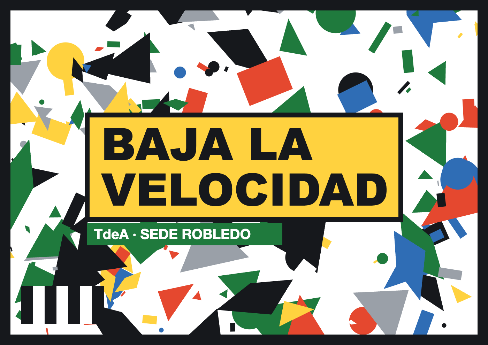

Cómo usarlo: imprime la hoja a color, sin «ajustar a página» con márgenes grandes, y ponla plana en el piso o en una mesa. Que no tenga arrugas ni brillo de lámpara encima. Párate en el lado del texto «párate aquí», abre la simulación y apunta la cámara a la hoja desde unos 40–80 cm de altura, en diagonal.
Mientras más grande la impresión, desde más lejos se puede ver (sirve también en pantalla de un portátil o tablet, o impresa en pliego para el piso del salón). Si el rastreo se pierde, la simulación se pausa sola hasta que vuelvas a apuntar.